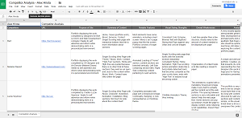
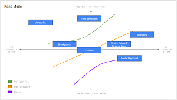
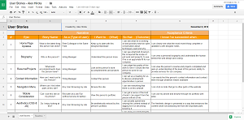
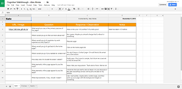
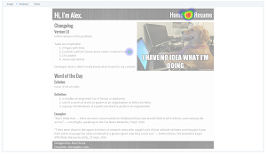
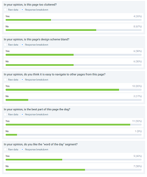

User Interviews are crucial part in User Interviews. They provide insight into who your users are and what they are looking for in the product you are developing. In my case, I created my questions to help discover what kinds of users I was talking to and what they would have expected to see in a portfolio.
Competitor Analysis

Competitor Analysis is the act of evaluating similar products to your own, with the goal of seeing what works and what does not. In doing so, it will help guide the design of your own product. In my case, I analyzed three other portfolios created by UX/UI designers. As I an aspiring UX/UI Designer mysel, I believed it was best to analyze others in my field.
Feature Value Matrix
A feature value matrix is a way of organizing features based off of three main qualities: business value, user value and technical effort. I chose the features Contact by Email, Page Navigation, Javascript, Breakpoints/Media Query, CSS, Biography, Pictures, and Design Tailored Resume Page. These features represent the building blocks of how I made my Website while following instructions.
Feature Prioritization

For this project, I chose to prioritize features that gave my page basic functionality, and then basic content, followed by everything else. In doing so, my website was fully functional and had some basic content that could be accessed. When building my interface, I wanted to make sure that the building blocks fit together with some basic content before I attempted to add tons of content with flashy animations.
User Testing
User Stories

User Stories are important from a design perspective as they give you insight into what users ideally want to do, how they would do it, and how they would measure success. In this way, you can plan your interface to give each of these user stories a successful outcome. I chose my target audience, consisting of mostly hiring managers, people related to the UX/UI design field, and potential business partners/colleagues. From this, I developed user stories centered around them.
Cognitive Walkthrough

Cognitive Walkthroughs are guided/assisted exploration of a product, with a set of questions designed to gain insight into how the user is interacting with the product. These are useful in understanding the behavior of users as they actually test your website.
User Tests
Click Test

The first test I chose to conduct was a click test. I chose this particular test because I wanted to be sure that navigation on the page was simple enough to find and use. Navigation is one of my highest priority features and I wanted to make sure that it was working as intended.
Question Test

The second test I chose to conduct was a question test. This was a short survey style question test that I used to highlight key points of my home page that I thought were worth noting. From this, I wanted the results to help guide how to change my website.
Summary of Findings
Overall, the process of user testing and user research was quite useful. I learned a lot about how my website was designed and how users were going to look and use it. The biggest challenge I faced when conduting user testing and research was finding enough willing participants, but in the end, I was able to get a lot out of the few people I had to work with.
User Research was a little bit less useful in my opinion because it did not deal with my website itself, but rather focused on the users and what I they would want. User Interviews, for example, just rehashed what I already expected out of building a web portfolio. Maybe this is owed to the interview subjects, but I found that I mostly already knew what to look for. The Feature Value Matrix, and Feature Prioritization were equally redundant to me. While I found it handy to put down on paper the priority for my features, it very much reflected the thought process I went through in order to design and develop my portfolio. Competitor Analysis was the most useful, giving me a chance to look more in depth at some top level web portfolios. I saw a lot of great features that I hope to be able to emulate, but the clear message across all of the portfolios I looked at was that the portfolio reflected the person who designed and developed it.
User Testing is where most of the good information came from, as it dealt directly with my portfolio and how it could be improved upon. User Stories was the least useful in my opinion. I had a hard time coming up with multiple stories that weren't just variations of one story. Web portfolios, while they can be flashy and integrate complex ideas and animations, are designed for a simple task: To present the work that the protfolio subject has done, in a unique and meaningful way. There won't be complex and rich user stories that can be built from this in my opninion. The cognitive walkthroughs were extremely useful as they highlighted glaring weaknesses in my portfolio. For example, most people found it difficult to find the about me page because it's listed as "Bio" in the navigation bar. The user tests were also very useful because they provded guidance on what was working and what was not working for my websites. The question test in particular stated that 50% of people survey said the home page was too cluttered, while pretty much everyone loved the dog picture. The results seem to point towards more visuals and less text.
Incorporation of Findings
From my user research and testing, the biggest pain point of my portfolio is that there is too much text and not enough visuals. For the home page, I plan on keeping the changelog, getting rid of the word of the day section and providing more visual elements. I believe the changelog is a very important part, and I simply will not budge on this matter. The Word of the Day section is being removed because one of my testers thought my home page was dictionary.com (sigh). The visual elements partcomes from the fact that many people thought my page was cluttered, coupled with the fact that multipole testers said they like the layout of the page the least. It looked like an essay to them; structured, but boring. The visual element doesn't have to be more pictures, but rather maybe making the home page feel more like a "home" page, with a lot of personal flair and maybe an animation of my name or something. I saw in my competitor analysis that this made certain portfolios look very appealing.
For my Biography page, I'm going to change the name of the page and then once again add mroe visual elements as well as reduce the amount of text. I'm considering changing the picture of myself as well. As stated in my Summary of Findings, people had trouble finding my about page because it was titled "Bio" and not "About" or something along those lines. The picture of myself is also not a professional headshot, so I'm considering getting professional headshots taken and then replace the picture. I am considering adding the professional headshot to the home page as well to more properly denote who I am, matching a face to the name. My Bio page is also just one insane wall of text. I plan on changing this by separating the sections and revamping them with visuals.
For my Resume page, I plan on adding in content, as well as making visual markers for my projects section of the resume page. I want to have a download link to my resume as well, but also have my resume displayed on the page. This leads me to want to separate the resume and projects sections into two separate pages. In my competitor analysis, all of the portfolios had image links with a picture of the specific project, and the link went to a detail page all about the project and what was done. I plan to emulate this, and this I believe calls for me to separate the two pages. This also reduces clutter on my page, which was a major pain point in my portfolio.
As a whole, I'm very satisfied with how my project came out. This was my first time building a website ever, and so I tried to do something simple, yet inherently me. While I satsified those conditions, my portfolio came out a bit bland in style, and using my finds from research and testing, I hope to revamp my portfolio while retaining some of my key elements.